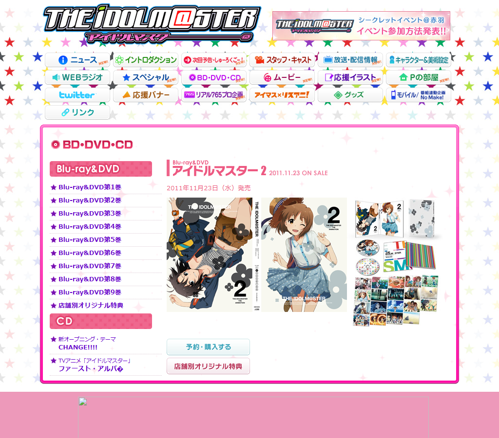
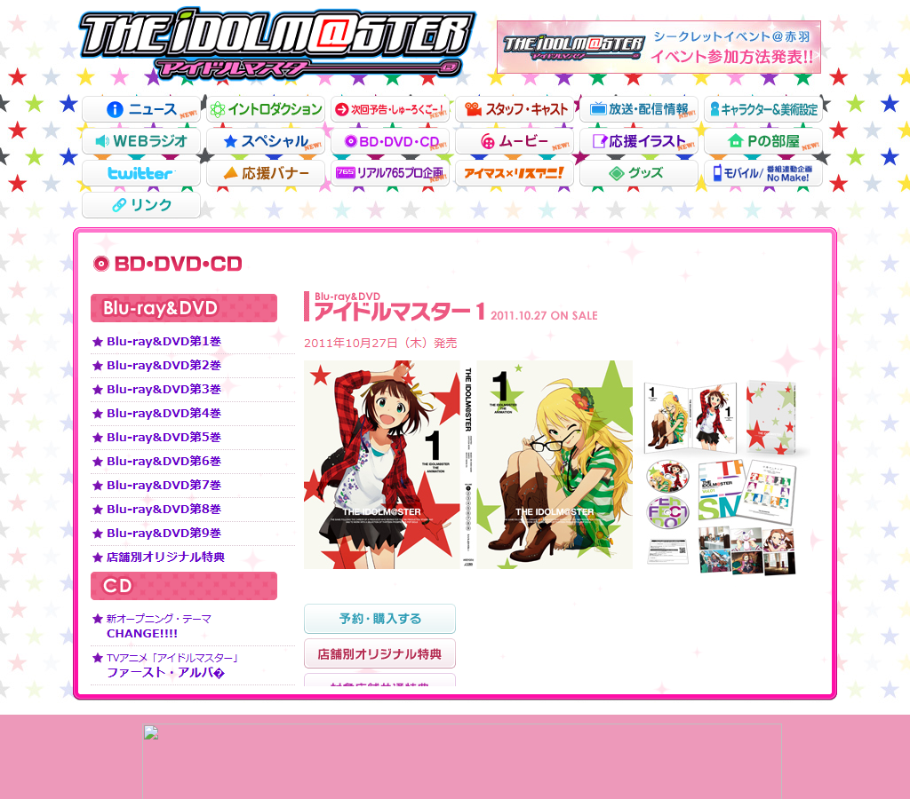
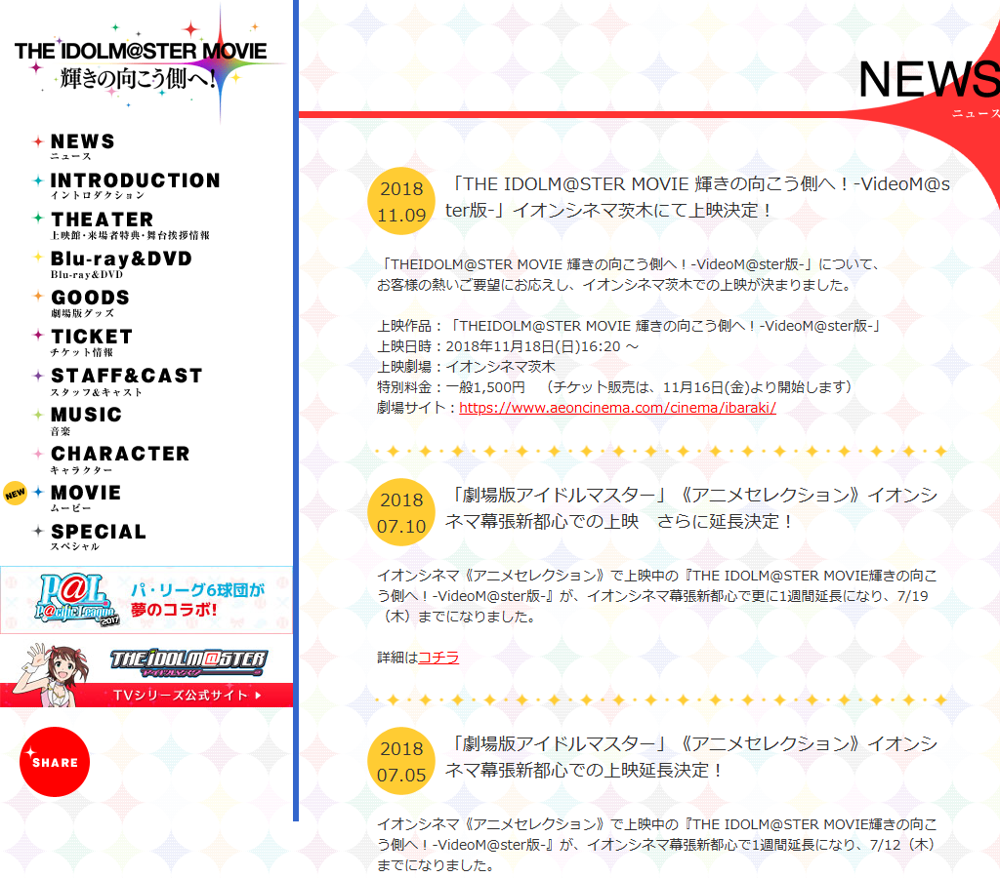
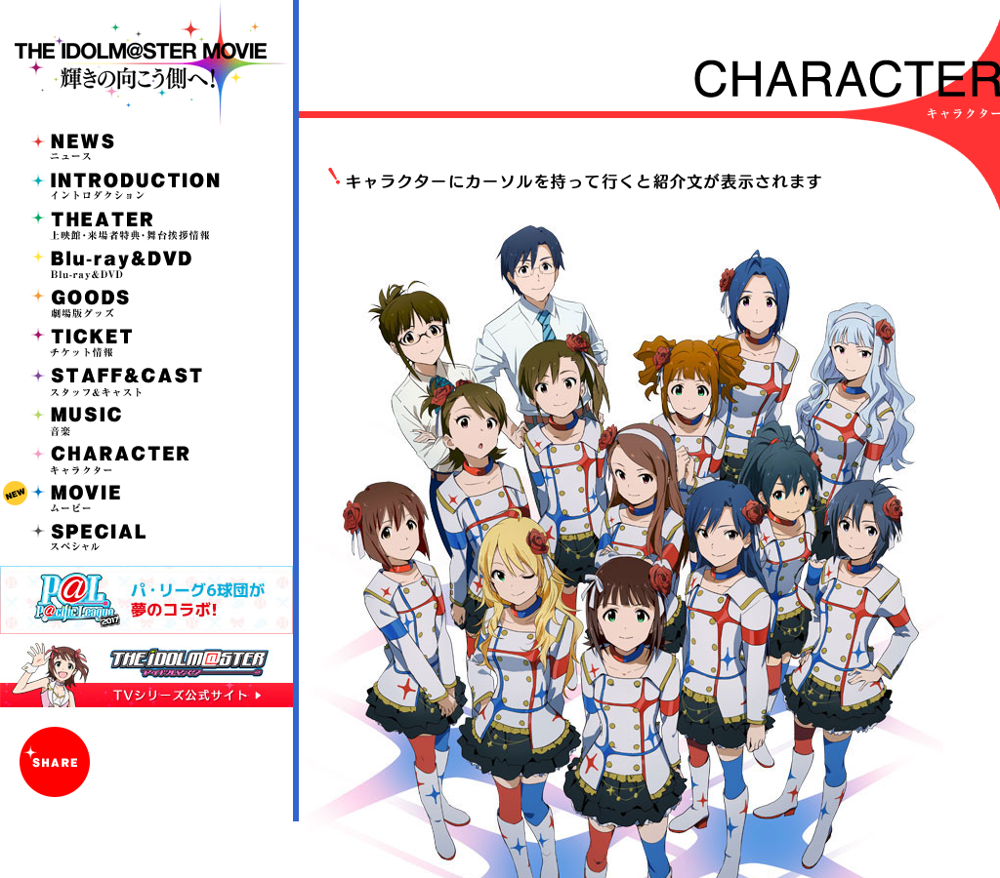
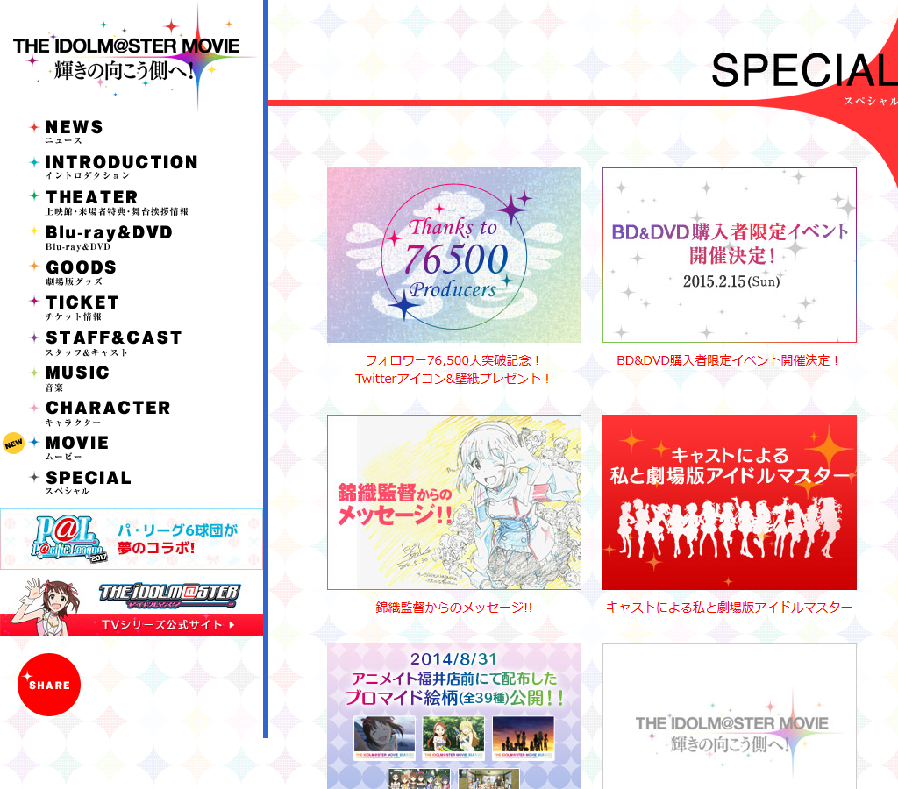
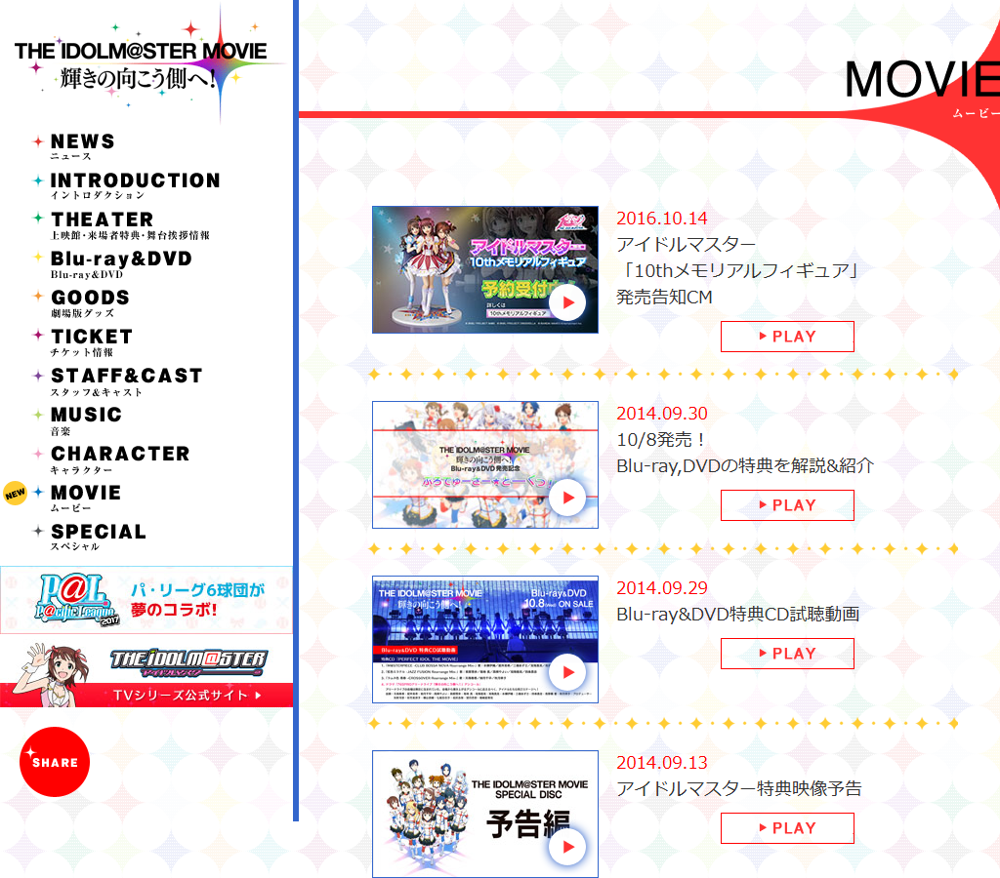

animas (anime) — index + 10 adjacent subpages

00-products-pac02.html
01-products-pac01.html
02-news-index.html03-intro-index.html 04-yokoku-index.html
04-yokoku-index.html 05-staff-index.html
05-staff-index.html 06-onair-index.html
06-onair-index.html
07-character-index.html
08-special-index.html
09-movie-index.html 10-illust-index.html
10-illust-index.html